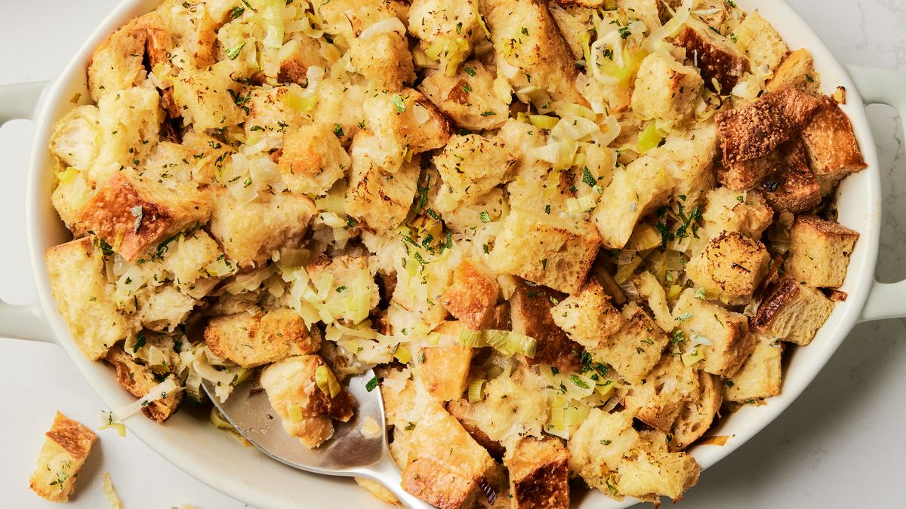

Stuffing Recipe

Description
This thanksgiving day must goes well with turkey or just by itself
Ingredients
- 1 lb ground pork sausage
- 1 large onion
- 4-6 stalks celery
- 1 loaf bread
- 1 cup butter
- 1 1/2 cup chicken stock
- 1 tsp salt
- 1/2 tsp pepper
- 3 tbl sage
Steps
- Lay bread out to dry overnight then dice
- Brown ground sausage and set aside leave fat in the pan
- In the leftover fat add onion, celery. Cook on medium high until onions are translucent 10-15 minutes
- Mix togehter in large bowl with bread, butter, spices and stock, add more stock if it seems too dry
- Put in ovensafe baking dish and bake at 325 for 25-30 minutes
- Serve and enjoy preferably with turkey